2 Как работает алгоритм обратного распространения ошибки
В прошлой главе мы видели, как нейронные сети могут выучивать свои веса и смещения с помощью алгоритма градиентного спуска. Однако в нашем объяснении был пробел: мы не обсудили, как вычислять градиент функции стоимости. И это серьёзный пробел! В этой главе я объясню быстрый алгоритм вычисления таких градиентов, известный как алгоритм обратного распространения ошибки.
Алгоритм обратного распространения ошибки впервые был предложен в 1970-х годах, но его важность по-настоящему оценили лишь после знаменитой статьи Дэвида Румельхарта, Джеффри Хинтона и Рональда Уильямса 1986 года. В ней описано несколько нейронных сетей, в которых обратное распространение работает гораздо быстрее прежних подходов к обучению, что позволило применить нейронные сети к задачам, ранее не поддававшимся решению. Сегодня обратное распространение ошибки — рабочая лошадка обучения нейронных сетей.
Эта глава насыщена математикой сильнее, чем остальная книга. Если вы не в восторге от математики, у вас может возникнуть соблазн пропустить главу и считать обратное распространение чёрным ящиком, в детали которого вы готовы не вникать. Зачем тратить время на изучение этих деталей?
Причина, разумеется, — понимание. В основе обратного распространения лежит выражение для частной производной \(\partial{}C/\partial{}w\) функции стоимости \(C\) по любому весу \(w\) (или смещению \(b\)) сети. Это выражение говорит нам, насколько быстро меняется стоимость, когда мы меняем веса и смещения. И хотя выражение довольно сложное, в нём есть и своя красота: у каждого его элемента есть естественная, интуитивно понятная интерпретация. Так что обратное распространение — не просто быстрый алгоритм обучения. Оно даёт подробное понимание того, как изменение весов и смещений меняет общее поведение сети. Это стоит изучить подробно.
При этом, если вы хотите лишь пробежать главу глазами или сразу перейти к следующей, — ничего страшного. Остальная книга написана так, чтобы быть понятной, даже если считать обратное распространение чёрным ящиком. Конечно, дальше в книге будут места, где я ссылаюсь на результаты этой главы. Но и там вы сможете понять основные выводы, даже если не проследите все рассуждения.
2.1 Разминка: быстрый матричный способ вычисления выхода нейронной сети
Прежде чем обсуждать обратное распространение, разомнёмся на быстром матричном алгоритме вычисления выхода нейронной сети. Мы уже мельком видели этот алгоритм в конце прошлой главы (раздел 1.6), но я описал его быстро, так что стоит вернуться к нему подробнее. В частности, это хороший способ освоиться с обозначениями, используемыми в обратном распространении, в знакомом контексте.
Начнём с обозначений, позволяющих однозначно ссылаться на веса сети. Будем обозначать через \(w^l_{jk}\) вес связи от \(k\)-го нейрона \((l-1)\)-го слоя к \(j\)-му нейрону \(l\)-го слоя. Например, на схеме ниже показан вес связи от четвёртого нейрона второго слоя ко второму нейрону третьего слоя сети:
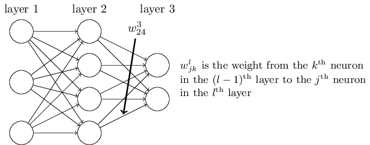
Поначалу такие обозначения кажутся громоздкими, и чтобы освоить их, нужно потрудиться. Но приложив немного усилий, вы увидите, что они становятся простыми и естественными. Одна странность этих обозначений — порядок индексов j и k. Можно подумать, что логичнее обозначать через j входной нейрон, а через k — выходной, а не наоборот, как сделано на самом деле. Причину этой странности я объясню ниже. Похожие обозначения мы используем для смещений и активаций сети. А именно, через \(b^l_j\) обозначаем смещение \(j\)-го нейрона \(l\)-го слоя, а через \(a^l_j\) — активацию \(j\)-го нейрона \(l\)-го слоя. На следующей схеме показаны примеры использования этих обозначений:
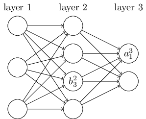
В этих обозначениях активация \(a^l_j\) \(j\)-го нейрона \(l\)-го слоя связана с активациями \((l-1)\)-го слоя уравнением (сравните с уравнением (4) и его обсуждением в прошлой главе)
\[a^{l}_j = \sigma\left( \sum_k w^{l}_{jk} a^{l-1}_k + b^l_j \right),\tag{23}\label{eq:23}\] где сумма берётся по всем нейронам \(k\) \((l-1)\)-го слоя. Чтобы переписать это выражение в матричной форме, определим для каждого слоя \(l\) матрицу весов \(w^l\). Элементы матрицы весов \(w^l\) — это просто веса связей, ведущих к \(l\)-му слою нейронов, то есть элемент в \(j\)-й строке и \(k\)-м столбце равен \(w^l_{jk}\). Аналогично для каждого слоя \(l\) определим вектор смещений \(b^l\). Вы, наверное, догадываетесь, как он устроен: компоненты вектора смещений — это просто значения \(b^l_j\), по одной компоненте на каждый нейрон \(l\)-го слоя. И наконец, определим вектор активаций al, компоненты которого — активации \(a^l_j\). Последнее, что нужно, чтобы переписать (23) в матричной форме, — идея векторизации функции, например \(\sigma\). Мы кратко встречались с векторизацией в прошлой главе, но напомню: идея в том, чтобы применить функцию, например \(\sigma\), к каждому элементу вектора \(v\). Для такого поэлементного применения функции мы используем очевидное обозначение \(\sigma(v)\). То есть компоненты \(\sigma(v)\) — это просто \(\sigma(v)_j = \sigma(v_j)\). Например, для функции \(f(x)=x^2\) векторизованная форма \(f\) действует так: \[f\left(\left[ \begin{array}{c} 2 \\ 3 \end{array} \right] \right) = \left[ \begin{array}{c} f(2) \\ f(3) \end{array} \right] = \left[ \begin{array}{c} 4 \\ 9 \end{array} \right], \tag{24}\label{eq:24}\] то есть векторизованная \(f\) просто возводит в квадрат каждый элемент вектора.
С этими обозначениями уравнение (23) можно переписать в красивой и компактной векторизованной форме \[a^{l} = \sigma(w^l a^{l-1}+b^l). \tag{25}\label{eq:25}\] Это выражение позволяет гораздо более глобально взглянуть на то, как активации одного слоя связаны с активациями предыдущего: мы просто применяем матрицу весов к активациям, прибавляем вектор смещений и, наконец, применяем функцию \(\sigma\)1. Такой глобальный взгляд часто проще и лаконичнее (и требует меньше индексов!), чем рассмотрение нейрон за нейроном, которым мы пользовались до сих пор. Считайте его способом выбраться из «индексного ада», оставаясь при этом точным в описании происходящего. Это выражение полезно и на практике, поскольку большинство библиотек для работы с матрицами предоставляют быстрые реализации умножения матриц, сложения векторов и векторизации. Собственно, код из прошлой главы (см. 1.6) неявно использовал это выражение для вычисления поведения сети.
Вычисляя \(a^l\) по уравнению (25), мы попутно вычисляем промежуточную величину \(z^l \equiv w^l a^{l-1}+b^l\). Эта величина оказывается настолько полезной, что заслуживает собственного имени: будем называть \(z^l\) взвешенным входом нейронов слоя \(l\). Дальше в главе мы будем активно пользоваться взвешенным входом \(z^l\). Уравнение (25) иногда записывают через взвешенный вход как \(a^l=\sigma(z^l)\). Стоит также отметить, что компоненты \(z^l\) равны \(z^l_j= \sum_k w^l_{jk} a^{l-1}_k+b^l_j\), то есть \(z^l_j\) — это просто взвешенный вход функции активации нейрона \(j\) слоя \(l\).
2.2 Два предположения о функции стоимости
Цель обратного распространения — вычислить частные производные \(\partial{}C/\partial{}w\) и \(\partial{}C/\partial{}b\) функции стоимости C по любому весу w или смещению b сети. Чтобы обратное распространение работало, нужно сделать два основных предположения о виде функции стоимости. Но прежде чем их сформулировать, полезно держать в голове пример функции стоимости. Возьмём квадратичную функцию стоимости из прошлой главы (ср. уравнение (6)). В обозначениях предыдущего раздела квадратичная стоимость имеет вид \[C = \frac{1}{2n} \sum_x \left\|y(x)-a^L(x)\right\|^2, \tag{26}\label{eq:26}\] где \(n\) — общее число обучающих примеров; сумма берётся по отдельным обучающим примерам \(x\); \(y=y(x)\) — соответствующий желаемый выход; \(L\) — число слоёв сети; \(a^L=a^L(x)\) — вектор активаций на выходе сети при входе \(x\).
Итак, какие предположения о функции стоимости \(C\) нужны, чтобы можно было применить обратное распространение? Первое предположение: функцию стоимости можно записать как среднее \(C=\frac1n\sum_xC_x\) функций стоимости \(C_x\) отдельных обучающих примеров \(x\). Для квадратичной функции стоимости это так: стоимость одного обучающего примера равна \(C_x=\frac12\|y-a^L\|^2\). Это предположение будет выполняться и для всех остальных функций стоимости, которые встретятся нам в книге.
Это предположение нужно потому, что на самом деле обратное распространение позволяет вычислить частные производные \(\partial{}C_x/\partial{}w\) и \(\partial{}C_x/\partial{}b\) для одного обучающего примера. Затем мы получаем \(\partial{}C/\partial{}w\) и \(\partial{}C/\partial{}b\), усредняя по обучающим примерам. Собственно, держа это предположение в уме, будем считать обучающий пример \(x\) фиксированным и опустим индекс \(x\), записывая стоимость \(C_x\) просто как \(C\). В конце концов мы вернём \(x\) на место, но пока это лишь загромождает обозначения, и лучше оставить его неявным.
Второе предположение о стоимости: её можно записать как функцию выходов нейронной сети:
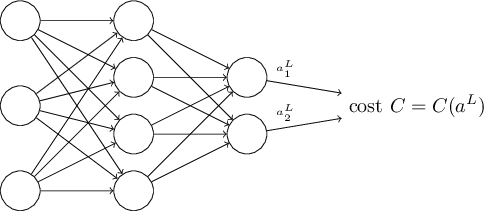
Например, квадратичная функция стоимости удовлетворяет этому требованию, поскольку квадратичная стоимость для одного обучающего примера \(x\) записывается как \[C = \frac{1}{2} \left\|y-a^L\right\|^2 = \frac{1}{2} \sum_j \left(y_j-a^L_j\right)^2, \tag{27}\label{eq:27}\] и, значит, является функцией выходных активаций. Конечно, эта функция стоимости зависит и от желаемого выхода \(y\), и вы можете спросить, почему мы не считаем стоимость также функцией \(y\). Но вспомните, что входной обучающий пример \(x\) зафиксирован, а значит, выход \(y\) — тоже фиксированный параметр. В частности, его никак нельзя изменить, меняя веса и смещения, то есть это не то, чему учится нейронная сеть. Поэтому имеет смысл считать \(C\) функцией только выходных активаций \(a^L\), а \(y\) — просто параметром, участвующим в определении этой функции.
2.3 Произведение Адамара, \(s\odot{}t\)
Алгоритм обратного распространения основан на обычных операциях линейной алгебры — сложении векторов, умножении вектора на матрицу и так далее. Но одна из операций используется чуть реже. А именно, пусть \(s\) и \(t\) — два вектора одной размерности. Тогда через \(s\odot{}t\) мы обозначаем поэлементное произведение этих векторов. Таким образом, компоненты \(s\odot{}t\) — это просто \((s \odot t)_j = s_j t_j\). Например, \[\left[\begin{array}{c} 1 \\ 2 \end{array}\right] \odot \left[\begin{array}{c} 3 \\ 4\end{array} \right] = \left[ \begin{array}{c} 1 * 3 \\ 2 * 4 \end{array} \right] = \left[ \begin{array}{c} 3 \\ 8 \end{array} \right]. \tag{28}\label{eq:28}\] Такое поэлементное умножение иногда называют произведением Адамара или произведением Шура. Мы будем называть его произведением Адамара. Хорошие матричные библиотеки обычно содержат быструю реализацию произведения Адамара, и это пригождается при реализации обратного распространения.
2.4 Четыре фундаментальных уравнения обратного распространения
Обратное распространение — это способ понять, как изменение весов и смещений сети меняет функцию стоимости. В конечном счёте это означает вычисление частных производных \(\partial{}C/\partial{}w^l_{jk}\) и \(\partial{}C/\partial{}b^l_j\). Но чтобы их вычислить, сначала введём промежуточную величину \(\delta^l_j\), которую будем называть ошибкой \(j\)-го нейрона \(l\)-го слоя. Обратное распространение даст нам процедуру вычисления ошибки \(\delta^l_j\), а затем свяжет \(\delta^l_j\) с \(\partial{}C/\partial{}w^l_{jk}\) и \(\partial{}C/\partial{}b^l_j\).
Чтобы понять, как определяется ошибка, представьте, что в нашей нейронной сети завёлся демон:
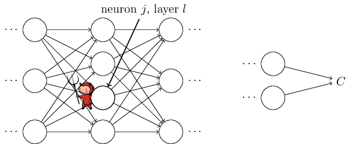
Демон сидит в \(j\)-м нейроне слоя \(l\). Когда на нейрон поступает вход, демон вмешивается в его работу. Он добавляет к взвешенному входу нейрона небольшое изменение \(\Delta{}z^l_j\), так что вместо \(\sigma(z^l_j)\) нейрон выдаёт \(\sigma(z^l_j+\Delta{}z^l_j)\). Это изменение распространяется через последующие слои сети и в итоге меняет общую стоимость на величину \(\frac{\partial{}C}{\partial{}z^l_j}\Delta{}z^l_j\).
Но это добрый демон: он пытается помочь вам уменьшить стоимость, то есть ищет такое \(\Delta{}z^l_j\), при котором стоимость станет меньше. Предположим, что \(\partial{}C/\partial{}z^l_j\) велико по модулю (положительное или отрицательное). Тогда демон может заметно уменьшить стоимость, выбрав \(\Delta{}z^l_j\) со знаком, противоположным \(\partial{}C/\partial{}z^l_j\). А если \(\partial{}C/\partial{}z^l_j\) близко к нулю, то, возмущая взвешенный вход \(z^l_j\), демон почти не сможет уменьшить стоимость. Насколько демон может судить, нейрон уже близок к оптимуму2. Так что в эвристическом смысле \(\partial{}C/\partial{}z^l_j\) служит мерой ошибки нейрона.
Исходя из этой истории, определим ошибку \(\delta^l_j\) нейрона \(j\) слоя \(l\) как \[\delta^l_j\equiv\frac{\partial{}C}{\partial{}z^l_j}.\tag{29}\label{eq:29}\] По нашим обычным соглашениям через \(\delta{}^l\) обозначим вектор ошибок слоя \(l\). Обратное распространение даст способ вычислить \(\delta{}^l\) для каждого слоя, а затем связать эти ошибки с величинами, которые нас действительно интересуют, — \(\partial{}C/\partial{}w^l_{jk}\) и \(\partial{}C/\partial{}b^l_j\).
Вы можете спросить, почему демон меняет именно взвешенный вход \(z^l_j\). Не естественнее ли представить, что демон меняет выходную активацию \(a^l_j\), и тогда мерой ошибки была бы \(\frac{\partial{}C}{\partial{}a^l_j}\)? На самом деле, если так сделать, всё получится очень похоже на обсуждение ниже. Но изложение обратного распространения станет алгебраически немного сложнее. Поэтому мы будем использовать в качестве меры ошибки \(\delta^l_j=\frac{\partial{}C}{\partial{}z^l_j}\)3.
План действий. Обратное распространение строится вокруг четырёх фундаментальных уравнений. Вместе они дают способ вычислить и ошибку \(\delta{}^l\), и градиент функции стоимости. Я привожу эти четыре уравнения ниже. Но предупреждаю: не рассчитывайте усвоить их мгновенно. Такие ожидания приведут лишь к разочарованию. На самом деле уравнения обратного распространения настолько богаты, что для их хорошего понимания нужны немалые время и терпение, пока вы постепенно погружаетесь в них всё глубже. Хорошая новость в том, что это терпение окупится многократно. Так что обсуждение в этом разделе — лишь начало пути к основательному пониманию этих уравнений.
Вот как мы будем углубляться в уравнения дальше в главе: я приведу краткое доказательство уравнений, которое помогает понять, почему они верны; мы перепишем уравнения в алгоритмической форме в виде псевдокода и увидим, как этот псевдокод превращается в настоящий, работающий код на Python; а в последнем разделе главы мы выработаем интуитивное понимание того, что означают уравнения обратного распространения и как их можно было бы открыть с нуля. По ходу дела мы снова и снова будем возвращаться к четырём фундаментальным уравнениям, и по мере того как ваше понимание будет углубляться, они станут привычными, а может быть, даже красивыми и естественными.
Уравнение для ошибки выходного слоя, \(\delta^L\). Компоненты \(\delta^L\) равны \[\delta^L_j = \frac{\partial C}{\partial a^L_j} \sigma'(z^L_j). \tag{BP1}\label{eq:BP1}\] Это очень естественное выражение. Первый множитель справа, \(\partial{}C/\partial{}a^L_j\), просто измеряет, насколько быстро меняется стоимость в зависимости от \(j\)-й выходной активации. Если, например, \(C\) слабо зависит от какого-то выходного нейрона \(j\), то \(\delta^L_j\) будет мало, чего мы и ожидаем. Второй множитель справа, \(\sigma'(z^L_j)\), измеряет, насколько быстро меняется функция активации \(\sigma\) в точке \(z^L_j\).
Обратите внимание: всё в ур. (BP1) легко вычисляется. В частности, \(z^L_j\) мы вычисляем, когда рассчитываем поведение сети, а вычислить \(\sigma'(z^L_j)\) стоит лишь небольших дополнительных затрат. Точный вид \(\partial{}C/\partial{}a^L_j\), конечно, зависит от вида функции стоимости. Однако если функция стоимости известна, вычислить \(\partial{}C/\partial{}a^L_j\) должно быть несложно. Например, если мы используем квадратичную функцию стоимости, то \(C=\frac12\sum_j(y_j-a^L_j)^2\), а значит, \(\partial{}C/\partial{}a^L_j=(a^L_j-y_j)\), что, очевидно, легко вычислить.
Уравнение (BP1) — покомпонентное выражение для \(\delta^L\). Это вполне хорошее выражение, но не та матричная форма, которая нужна нам для обратного распространения. Впрочем, переписать уравнение в матричной форме легко: \[\delta^L = \nabla_a C \odot \sigma'(z^L). \tag{BP1a}\label{eq:BP1a}\] Здесь \(\nabla_a C\) — вектор, компоненты которого равны частным производным \(\partial{}C/\partial{}a^L_j\). Можно считать, что \(\nabla_a C\) выражает скорость изменения \(C\) по выходным активациям. Легко видеть, что уравнения (BP1a) и (BP1) эквивалентны, поэтому дальше мы будем ссылаться на оба уравнения как на (BP1). Например, в случае квадратичной стоимости \(\nabla_a C =(a^L-y)\), и полностью матричная форма (BP1) принимает вид \[\delta^L = (a^L-y) \odot \sigma'(z^L). \tag{30}\label{eq:30}\] Как видите, в этом выражении всё имеет удобную векторную форму и легко вычисляется с помощью библиотеки вроде Numpy.
Уравнение, выражающее ошибку \(\delta^l\) через ошибку следующего слоя, \(\delta^{l+1}\). А именно: \[\delta^l = \left((w^{l+1})^T \delta^{l+1}\right) \odot \sigma'(z^l), \tag{BP2}\label{eq:BP2}\] где \((w^{l+1})^T\) — транспонированная матрица весов \(w^{l+1}\) (\(l\)+1)-го слоя. Уравнение выглядит сложным, но у каждого его элемента есть понятная интерпретация. Пусть нам известна ошибка \(\delta^{l+1}\) в (\(l\)+1)-м слое. Применение транспонированной матрицы весов \((w^{l+1})^T\) можно интуитивно понимать как перемещение ошибки назад по сети, что даёт некую меру ошибки на выходе \(l\)-го слоя. Затем мы берём произведение Адамара \(\odot \sigma'(z^l)\). Это перемещает ошибку назад через функцию активации слоя \(l\) и даёт ошибку \(\delta^l\) взвешенного входа слоя \(l\).
Сочетая (BP2) с (BP1), можно вычислить ошибку \(\delta^l\) для любого слоя сети. Начинаем с того, что по (BP1) вычисляем \(\delta^L\), затем по уравнению (BP2) вычисляем \(\delta^{L-1}\), затем снова по уравнению (BP2) — \(\delta^{L-2}\), и так далее, проходя всю сеть в обратном направлении.
Уравнение для скорости изменения стоимости по любому смещению сети. А именно: \[\frac{\partial C}{\partial b^l_j} = \delta^l_j. \tag{BP3}\label{eq:BP3}\] То есть ошибка \(\delta^l_j\) в точности равна скорости изменения \(\partial{}C/\partial{}b^l_j\). Это отличная новость, поскольку (BP1) и (BP2) уже сказали нам, как вычислять \(\delta^l_j\). Сокращённо (BP3) можно записать так: \[\frac{\partial C}{\partial b} = \delta,\tag{31}\label{eq:31}\] где подразумевается, что \(\delta\) вычисляется для того же нейрона, что и смещение \(b\).
Уравнение для скорости изменения стоимости по любому весу сети. А именно: \[\frac{\partial C}{\partial w^l_{jk}} = a^{l-1}_k \delta^l_j. \tag{BP4}\label{eq:BP4}\] Оно говорит, как вычислить частные производные \(\partial{}C/\partial{}w^l_{jk}\) через величины \(\delta^l\) и \(a^{l-1}\), которые мы уже умеем вычислять. Это уравнение можно переписать в обозначениях с меньшим числом индексов: \[\frac{\partial C}{\partial w} = a_{\rm in} \delta_{\rm out}, \tag{32}\label{eq:32}\] где подразумевается, что \(a_\mathrm{in}\) — активация нейрона на входе веса \(w\) (от которого идёт связь), а \(\delta_\mathrm{out}\) — ошибка нейрона на выходе веса \(w\) (к которому связь ведёт). Если приблизить картинку и посмотреть только на вес \(w\) и два соединённых им нейрона, это можно изобразить так:
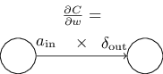
Приятное следствие уравнения (32): когда активация \(a_\mathrm{in}\) мала, \(a_\mathrm{in}\approx0\), градиент \(\partial{}C/\partial{}w\) тоже будет мал. В этом случае мы будем говорить, что вес учится медленно, имея в виду, что он мало меняется в ходе градиентного спуска. Иными словами, одно из следствий (BP4) таково: веса связей, исходящих из нейронов с низкой активацией, учатся медленно.
Из (BP1)–(BP4) можно извлечь и другие наблюдения в том же духе. Начнём с выходного слоя. Рассмотрим множитель \(\sigma'(z^L_j)\) в (BP1). Вспомните график сигмоиды из прошлой главы: функция \(\sigma\) становится очень пологой, когда \(\sigma(z^L_j)\) примерно равно 0 или 1. В этом случае \(\sigma'(z^L_j)\approx0\). Отсюда урок: вес в последнем слое будет учиться медленно, если активация выходного нейрона либо низкая (\(\approx0\)), либо высокая (\(\approx1\)). В таком случае обычно говорят, что выходной нейрон насытился, и в результате вес перестал учиться (или учится медленно). То же самое верно и для смещений выходного нейрона.
Аналогичные наблюдения можно сделать и для предыдущих слоёв. В частности, обратите внимание на множитель \(\sigma'(z^l)\) в (BP2). Он означает, что \(\delta^l_j\), скорее всего, станет малым, если нейрон близок к насыщению. А это, в свою очередь, означает, что все веса связей, входящих в насыщенный нейрон, будут учиться медленно4.
Подведём итог: мы выяснили, что вес будет учиться медленно, если либо входной нейрон имеет низкую активацию, либо выходной нейрон насыщен, то есть его активация либо высокая, либо низкая.
Ни одно из этих наблюдений не слишком удивительно. Тем не менее они помогают уточнить нашу мысленную модель того, что происходит при обучении нейронной сети. Более того, такое рассуждение можно развернуть в обратную сторону. Оказывается, четыре фундаментальных уравнения верны для любой функции активации, а не только для стандартной сигмоиды (потому что, как мы сейчас увидим, в доказательствах не используются никакие особые свойства \(\sigma\)). Значит, с помощью этих уравнений можно проектировать функции активации с нужными свойствами обучения. Чтобы дать представление об этом, приведу пример: допустим, мы выбрали (не сигмоидную) функцию активации \(\sigma\) так, чтобы \(\sigma'\) всегда была положительной и никогда не приближалась к нулю. Это предотвратило бы замедление обучения, которое происходит при насыщении обычных сигмоидных нейронов. Дальше в книге мы увидим примеры подобных изменений функции активации. Если держать в уме четыре уравнения (BP1)–(BP4), легче понять, зачем пробуют такие изменения и к чему они могут привести.
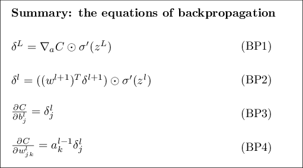
2.4.1 Задача
Другая запись уравнений обратного распространения. Я записал уравнения обратного распространения (а именно (BP1) и (BP2)) с помощью произведения Адамара. Такая запись может смущать, если вы не привыкли к произведению Адамара. Существует альтернативный подход, основанный на обычном умножении матриц, который некоторым читателям может показаться более понятным.
Покажите, что (BP1) можно переписать в виде \[\delta^L = \Sigma'(z^L) \nabla_a C, \tag{33}\label{eq:33}\] где \(\Sigma'(z^L)\) — квадратная матрица, на диагонали которой стоят значения \(\sigma'(z^L_j)\), а все внедиагональные элементы равны нулю. Заметьте, что эта матрица действует на \(\nabla_a C\) обычным умножением матриц.
Покажите, что (BP2) можно переписать в виде \[\delta^l = \Sigma'(z^l) (w^{l+1})^T \delta^{l+1}. \tag{34}\label{eq:34}\]
Объединив наблюдения (1) и (2), покажите, что \[\delta^l = \Sigma'(z^l) (w^{l+1})^T \ldots \Sigma'(z^{L-1}) (w^L)^T \Sigma'(z^L) \nabla_a C \tag{35}\label{eq:35}\] Читателям, привычным к умножению матриц, это уравнение может показаться понятнее, чем (BP1) и (BP2). Я сосредоточился на (BP1) и (BP2) потому, что такой подход оказывается быстрее при численной реализации.
2.5 Доказательство четырёх фундаментальных уравнений (необязательный раздел)
Теперь докажем четыре фундаментальных уравнения (BP1)–(BP4). Все четыре — следствия цепного правила (правила дифференцирования сложной функции) из анализа функций многих переменных. Если вы свободно владеете цепным правилом, настоятельно советую попробовать вывести уравнения самостоятельно, прежде чем читать дальше.
Начнём с уравнения (BP1), которое даёт выражение для ошибки выходного слоя \(\delta^l\). Чтобы доказать это уравнение, вспомним, что по определению \[\delta^L_j = \frac{\partial C}{\partial z^L_j}. \tag{36}\label{eq:36}\] Применив цепное правило, можно выразить эту частную производную через частные производные по выходным активациям: \[\delta^L_j = \sum_k \frac{\partial C}{\partial a^L_k} \frac{\partial a^L_k}{\partial z^L_j}, \tag{37}\label{eq:37}\] где сумма берётся по всем нейронам \(k\) выходного слоя. Разумеется, выходная активация \(a^L_k\) \(k\)-го нейрона зависит от взвешенного входа \(z^L_j\) \(j\)-го нейрона только при \(k=j\). Поэтому \(\partial{}a^L_k/\partial{}z^L_j\) обращается в ноль при \(k\ne{}j\). В результате предыдущее уравнение упрощается до \[\delta^L_j = \frac{\partial C}{\partial a^L_j} \frac{\partial a^L_j}{\partial z^L_j}. \tag{38}\label{eq:38}\] Вспомнив, что \(a^L_j=\sigma(z^L_j)\), второй множитель справа можно записать как \(\sigma'(z^L_j)\), и уравнение принимает вид \[\delta^L_j = \frac{\partial C}{\partial a^L_j} \sigma'(z^L_j), \tag{39}\label{eq:39}\] а это и есть (BP1) в покомпонентной форме. Далее докажем (BP2) — уравнение, выражающее ошибку \(\delta^l\) через ошибку следующего слоя \(\delta^{l+1}\). Для этого нужно переписать \(\delta^l_j=\partial{}C/\partial{}z^l_j\) через \(\delta^{l+1}_k=\partial{}C/\partial{}z^{l+1}_k\). Это можно сделать с помощью цепного правила: \[\delta^l_j = \frac{\partial C}{\partial z^l_j} = \sum_k \frac{\partial C}{\partial z^{l+1}_k} \frac{\partial z^{l+1}_k}{\partial z^l_j} = \sum_k \frac{\partial z^{l+1}_k}{\partial z^l_j} \delta^{l+1}_k, \tag{42}\label{eq:42}\] где на последнем шаге мы поменяли местами два множителя справа и подставили определение \(\delta^{l+1}_k\). Чтобы вычислить первый множитель в последнем выражении, заметим, что \[z^{l+1}_k = \sum_j w^{l+1}_{kj} a^l_j +b^{l+1}_k = \sum_j w^{l+1}_{kj} \sigma(z^l_j) +b^{l+1}_k. \tag{43}\label{eq:43}\] Продифференцировав, получим \[\frac{\partial z^{l+1}_k}{\partial z^l_j} = w^{l+1}_{kj} \sigma'(z^l_j). \tag{44}\label{eq:44}\] Подставив это обратно в (42), получим \[\delta^l_j = \sum_k w^{l+1}_{kj} \delta^{l+1}_k \sigma'(z^l_j). \tag{45}\label{eq:45}\] А это и есть (BP2) в покомпонентной форме.
Осталось доказать два последних уравнения — (BP3) и (BP4). Они тоже следуют из цепного правила, аналогично доказательствам двух уравнений выше. Оставляю их вам в качестве упражнения.
2.5.1 Упражнение
Докажите уравнения (BP3) и (BP4).
На этом доказательство четырёх фундаментальных уравнений обратного распространения завершено. Доказательство может показаться сложным. Но на самом деле это просто результат аккуратного применения цепного правила. Чуть менее лаконично: обратное распространение можно рассматривать как способ вычисления градиента функции стоимости путём систематического применения цепного правила из анализа функций многих переменных. Вот, собственно, и всё обратное распространение — остальное детали.
2.6 Алгоритм обратного распространения ошибки
Уравнения обратного распространения дают способ вычислить градиент функции стоимости. Запишем это явно в виде алгоритма:
Вход \(x\): задаём соответствующую активацию \(a^1\) входного слоя.
Прямой проход: для каждого \(l=2,3,\ldots{},L\) вычисляем \(z^l=w^la^{l-1}+b^l\) и \(a^l=\sigma(z_l)\).
Ошибка выходного слоя \(\delta^L\): вычисляем вектор \(\delta^{L} = \nabla_a C \odot \sigma'(z^L)\).
Обратное распространение ошибки: для каждого \(l = L-1, L-2,\ldots, 2\) вычисляем \(\delta^{l} = ((w^{l+1})^T \delta^{l+1}) \odot \sigma'(z^{l})\).
Выход: градиент функции стоимости равен \(\frac{\partial{}C}{\partial{}w^l_{jk}}=a^{l-1}_k\delta^l_j\) и \(\frac{\partial{}C}{\partial{}b^l_j}=\delta^l_j\).
Глядя на алгоритм, легко понять, почему он называется обратным распространением. Мы вычисляем векторы ошибок \(\delta^l\) в обратном порядке, начиная с последнего слоя. Может показаться странным, что мы проходим сеть задом наперёд. Но если вспомнить доказательство, то движение назад — следствие того, что стоимость является функцией выходов сети. Чтобы понять, как стоимость зависит от весов и смещений предыдущих слоёв, нужно многократно применять цепное правило, двигаясь по слоям в обратном направлении, чтобы получить пригодные для вычислений выражения.
2.6.1 Упражнения
Обратное распространение с одним изменённым нейроном. Предположим, что мы изменили один нейрон в сети прямого распространения так, что его выход равен \(f(\sum_j w_j x_j + b)\), где \(f\) — некоторая функция, отличная от сигмоиды. Как в этом случае нужно изменить алгоритм обратного распространения?
Обратное распространение с линейными нейронами. Предположим, что во всей сети мы заменили обычную нелинейную функцию \(\sigma\) на \(\sigma(z)=z\). Перепишите алгоритм обратного распространения для этого случая.
В описанном выше виде алгоритм обратного распространения вычисляет градиент функции стоимости для одного обучающего примера, \(C=C_x\). На практике обратное распространение обычно сочетают с алгоритмом обучения вроде стохастического градиентного спуска, где градиент вычисляется для многих обучающих примеров. А именно, для мини-пакета из \(m\) обучающих примеров следующий алгоритм выполняет один шаг обучения градиентным спуском по этому мини-пакету:
Подаём на вход набор обучающих примеров.
Для каждого обучающего примера \(x\): задаём соответствующую входную активацию \(a^{x,1}\) и выполняем следующие шаги:
Прямой проход: для каждого l\(=2,3,\ldots,L\) вычисляем \(z^{x,l}=w^la^{x,l-1}+b^l\) и \(a^{x,l}=\sigma(z^{x,l})\).
Ошибка выходного слоя \(\delta^{x,L}\): вычисляем вектор \(\delta^{x,L} = \nabla_a C_x \odot \sigma'(z^{x,L})\).
Обратное распространение ошибки: для каждого \(l=L-1,L-2,\ldots,2\) вычисляем \(\delta^{x,l} = ((w^{l+1})^T \delta^{x,l+1}) \odot \sigma'(z^{x,l})\).
Градиентный спуск: для каждого \(l=L,L-1,\ldots,2\) обновляем веса по правилу \(w^l \to w^l-\frac{\eta}{m} \sum_x \delta^{x,l} (a^{x,l-1})^T\), а смещения — по правилу \(b^l \to b^l-\frac{\eta}{m}\sum_x \delta^{x,l}\).
Конечно, чтобы реализовать стохастический градиентный спуск на практике, нужен ещё внешний цикл, формирующий мини-пакеты обучающих примеров, и внешний цикл по эпохам обучения. Для простоты я их опустил.
2.7 Код обратного распространения
Разобравшись с обратным распространением в абстрактном виде, мы
теперь можем понять код, которым реализовали обратное распространение в
прошлой главе. Напомню, что этот код находился в методах
update_mini_batch и backprop класса
Network. Код этих методов — прямой перевод описанного выше
алгоритма. В частности, метод update_mini_batch обновляет
веса и смещения объекта Network, вычисляя градиент для
текущего мини-пакета mini_batch обучающих примеров:
class Network(object):
...
def update_mini_batch(self, mini_batch, eta):
"""Обновляет веса и смещения сети, применяя градиентный спуск
с обратным распространением ошибки к одному мини-пакету.
"mini_batch" - список кортежей "(x, y)", "eta" - скорость
обучения."""
nabla_b = [np.zeros(b.shape) for b in self.biases]
nabla_w = [np.zeros(w.shape) for w in self.weights]
for x, y in mini_batch:
delta_nabla_b, delta_nabla_w = self.backprop(x, y)
nabla_b = [nb+dnb for nb, dnb in zip(nabla_b, delta_nabla_b)]
nabla_w = [nw+dnw for nw, dnw in zip(nabla_w, delta_nabla_w)]
self.weights = [w-(eta/len(mini_batch))*nw
for w, nw in zip(self.weights, nabla_w)]
self.biases = [b-(eta/len(mini_batch))*nb
for b, nb in zip(self.biases, nabla_b)]
Основную работу выполняет строка delta_nabla_b,
delta_nabla_w = self.backprop(x, y), которая с помощью
метода backprop вычисляет частные производные \(\partial{}C_x/\partial{}b^l_j\) и \(\partial{}C_x/\partial{}w^l_{jk}\). Метод
backprop точно следует алгоритму из предыдущего раздела.
Есть одно небольшое отличие — мы немного иначе нумеруем слои. Это
сделано, чтобы воспользоваться возможностью Python — отрицательными
индексами, отсчитывающими элементы с конца списка; например,
l[-3] — третий с конца элемент списка l. Ниже
приведён код backprop вместе с несколькими вспомогательными
функциями, вычисляющими функцию \(\sigma\), производную \(\sigma'\) и производную функции
стоимости. С этими дополнениями код должен быть понятен сам по себе.
Если что-то сбивает с толку, может помочь исходное описание (и полный
листинг) кода.
class Network(object):
...
def backprop(self, x, y):
"""Возвращает кортеж "(nabla_b, nabla_w)", представляющий
градиент функции стоимости C_x. "nabla_b" и "nabla_w" -
списки массивов numpy по слоям, аналогичные "self.biases"
и "self.weights"."""
nabla_b = [np.zeros(b.shape) for b in self.biases]
nabla_w = [np.zeros(w.shape) for w in self.weights]
# прямой проход
activation = x
activations = [x] # список для хранения всех активаций, слой за слоем
zs = [] # список для хранения всех векторов z, слой за слоем
for b, w in zip(self.biases, self.weights):
z = np.dot(w, activation)+b
zs.append(z)
activation = sigmoid(z)
activations.append(activation)
# обратный проход
delta = self.cost_derivative(activations[-1], y) * sigmoid_prime(zs[-1])
nabla_b[-1] = delta
nabla_w[-1] = np.dot(delta, activations[-2].transpose())
# Обратите внимание: переменная l в цикле ниже используется
# немного иначе, чем в обозначениях главы 2 книги. Здесь
# l = 1 означает последний слой нейронов, l = 2 - предпоследний
# и так далее. Это перенумерация схемы из книги, позволяющая
# воспользоваться тем, что в Python у списков бывают
# отрицательные индексы.
for l in xrange(2, self.num_layers):
z = zs[-l]
sp = sigmoid_prime(z)
delta = np.dot(self.weights[-l+1].transpose(), delta) * sp
nabla_b[-l] = delta
nabla_w[-l] = np.dot(delta, activations[-l-1].transpose())
return (nabla_b, nabla_w)
...
def cost_derivative(self, output_activations, y):
"""Возвращает вектор частных производных \partial C_x /
\partial a для выходных активаций."""
return (output_activations-y)
def sigmoid(z):
"""Сигмоида."""
return 1.0/(1.0+np.exp(-z))
def sigmoid_prime(z):
"""Производная сигмоиды."""
return sigmoid(z)*(1-sigmoid(z))2.7.1 Задача
Полностью матричный подход к обратному распространению по мини-пакету. Наша реализация стохастического градиентного спуска перебирает в цикле обучающие примеры мини-пакета. Алгоритм обратного распространения можно изменить так, чтобы он вычислял градиенты сразу для всех обучающих примеров мини-пакета. Идея в том, что вместо одного входного вектора \(x\) мы начинаем с матрицы \(X=[x_1x_2\ldots{}x_m]\), столбцы которой — векторы мини-пакета. Прямой проход выполняется умножением на матрицы весов, прибавлением подходящей матрицы смещений и применением сигмоиды ко всем элементам. Обратный проход — аналогично. Явно запишите псевдокод такого варианта алгоритма обратного распространения. Измените
network.pyтак, чтобы он использовал этот полностью матричный подход. Преимущество подхода в том, что он в полной мере использует возможности современных библиотек линейной алгебры. В результате он может работать заметно быстрее цикла по мини-пакету. (Например, на моём ноутбуке ускорение составляет примерно два раза на задачах классификации MNIST вроде тех, что мы рассматривали в прошлой главе.) На практике все серьёзные библиотеки обратного распространения используют именно полностью матричный подход или какой-то его вариант.
2.8 В каком смысле обратное распространение — быстрый алгоритм?
В каком смысле обратное распространение — быстрый алгоритм? Чтобы ответить на этот вопрос, рассмотрим другой подход к вычислению градиента. Представьте, что исследования нейронных сетей только начинаются. Скажем, на дворе 1950-е или 1960-е годы, и вы — первый человек в мире, которому пришло в голову использовать для обучения градиентный спуск! Но чтобы идея заработала, нужен способ вычислять градиент функции стоимости. Вы вспоминаете свои знания математического анализа и решаете проверить, нельзя ли вычислить градиент с помощью цепного правила. Но, немного повозившись, вы видите, что алгебра получается сложной, и падаете духом. Тогда вы пытаетесь найти другой подход. Вы решаете рассматривать стоимость как функцию только весов, \(C=C(w)\) (к смещениям мы скоро вернёмся). Вы нумеруете веса \(w_1,w_2,\ldots\) и хотите вычислить \(\partial{}C/\partial{}w_j\) для конкретного веса \(w_j\). Очевидный способ — воспользоваться приближением \[\frac{\partial C}{\partial w_{j}} \approx \frac{C(w+\epsilon e_j)-C(w)}{\epsilon}, \tag{46}\label{eq:46}\] где \(\epsilon>0\) — малое положительное число, а \(e_j\) — единичный вектор в \(j\)-м направлении. Иными словами, можно оценить \(\partial{}C/\partial{}w_j\), вычислив стоимость \(C\) для двух немного различающихся значений \(w_j\) и применив уравнение (46). Та же идея позволит вычислить и частные производные \(\partial{}C/\partial{}b\) по смещениям.
Такой подход выглядит очень многообещающим. Он концептуально прост и чрезвычайно легко реализуется — всего несколько строк кода. Уж точно он выглядит куда перспективнее, чем идея вычислять градиент с помощью цепного правила!
К сожалению, хотя подход и кажется многообещающим, при реализации оказывается, что он крайне медленный. Чтобы понять почему, представьте, что в нашей сети миллион весов. Тогда для каждого отдельного веса \(w_j\) нужно вычислить \(C(w+\epsilon{}e_j)\), чтобы получить \(\partial{}C/\partial{}w_j\). Значит, чтобы вычислить градиент, функцию стоимости нужно вычислить миллион раз, а это требует миллиона прямых проходов по сети (на каждый обучающий пример). Нужно ещё вычислить \(C(w)\), так что всего получается миллион и один проход по сети.
Хитрость обратного распространения в том, что оно позволяет вычислить сразу все частные производные \(\partial{}C/\partial{}w_j\) всего за один прямой проход по сети и следующий за ним один обратный проход. Грубо говоря, вычислительная стоимость обратного прохода примерно такая же, как у прямого5. Поэтому общая стоимость обратного распространения примерно равна стоимости всего двух прямых проходов по сети. Сравните это с миллионом и одним прямым проходом, который требовался в подходе на основе (46)! Так что, хотя обратное распространение внешне сложнее подхода на основе (46), на самом деле оно намного, намного быстрее.
Это ускорение впервые в полной мере оценили в 1986 году, и оно сильно расширило круг задач, которые могли решать нейронные сети. Это, в свою очередь, вызвало настоящий наплыв желающих использовать нейронные сети. Конечно, обратное распространение — не панацея. Уже в конце 1980-х годов люди упёрлись в ограничения, особенно при попытках обучать обратным распространением глубокие нейронные сети, то есть сети со многими скрытыми слоями. Дальше в книге мы увидим, как современные компьютеры и несколько хитрых новых идей позволяют теперь обучать такие глубокие нейронные сети с помощью обратного распространения.
2.9 Обратное распространение: общая картина
В моём изложении обратное распространение оставляет две загадки. Первая: что на самом деле делает алгоритм? Мы выработали картину того, как ошибка распространяется назад от выхода. Но можно ли пойти глубже и лучше прочувствовать, что происходит, когда мы выполняем все эти умножения матриц и векторов? Вторая загадка: как вообще можно было открыть обратное распространение? Одно дело — следовать шагам алгоритма или даже доказательству того, что он работает. Но это не значит, что вы понимаете задачу настолько хорошо, что смогли бы сами открыть этот алгоритм. Существует ли правдоподобная цепочка рассуждений, которая могла бы привести к открытию алгоритма обратного распространения? В этом разделе я займусь обеими загадками.
Чтобы лучше прочувствовать, что делает алгоритм, представим, что мы немного изменили некоторый вес сети \(w^l_{jk}\) на величину \(\Delta{}w^l_{jk}\):
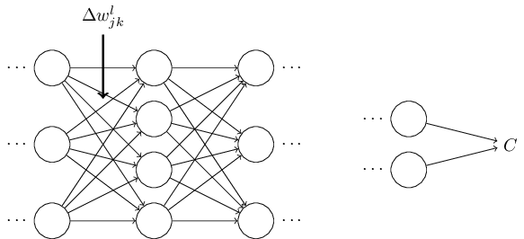
Это изменение веса вызовет изменение выходной активации соответствующего нейрона:
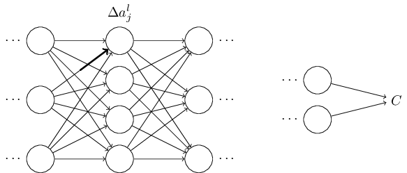
Это, в свою очередь, изменит все активации следующего слоя:
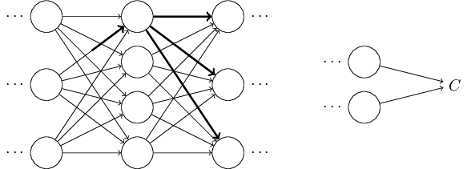
Эти изменения, в свою очередь, вызовут изменения в следующем слое, затем в следующем и так далее, вплоть до изменения в последнем слое, а затем и в функции стоимости:
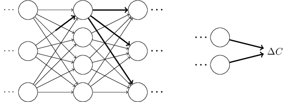
Изменение стоимости \(\Delta{}C\) связано с изменением веса \(\Delta{}w^l_{jk}\) уравнением \[\Delta C \approx \frac{\partial C}{\partial w^l_{jk}} \Delta w^l_{jk}. \tag{47}\label{eq:47}\] Отсюда возможный подход к вычислению \(\partial{}C/\partial{}w^l_{jk}\): аккуратно проследить, как малое изменение \(w^l_{jk}\) распространяется и вызывает малое изменение \(C\). Если мы сможем это сделать, аккуратно выражая всё по пути через легко вычисляемые величины, то сможем вычислить и \(\partial{}C/\partial{}w^l_{jk}\).
Попробуем это проделать. Изменение \(\Delta{}w^l_{jk}\) вызывает малое изменение \(\Delta{}a^l_j\) активации \(j\)-го нейрона \(l\)-го слоя. Это изменение равно \[\Delta a^l_j \approx \frac{\partial a^l_j}{\partial w^l_{jk}} \Delta w^l_{jk}. \tag{48}\label{eq:48}\] Изменение активации \(\Delta{}a^l_j\) вызовет изменения всех активаций следующего, (\(l\)+1)-го слоя. Сосредоточимся на том, как меняется лишь одна из этих активаций, скажем \(a^{l+1}_q\):
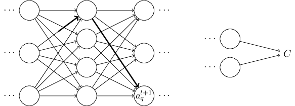
Она изменится так: \[\Delta a^{l+1}_q \approx \frac{\partial a^{l+1}_q}{\partial a^l_j} \Delta a^l_j. \tag{49}\label{eq:49}\] Подставив выражение из уравнения (48), получим: \[\Delta a^{l+1}_q \approx \frac{\partial a^{l+1}_q}{\partial a^l_j} \frac{\partial a^l_j}{\partial w^l_{jk}} \Delta w^l_{jk}. \tag{50}\label{eq:50}\] Конечно, изменение \(\Delta{}a^{l+1}_q\), в свою очередь, вызовет изменения активаций следующего слоя. Можно представить себе путь через всю сеть от \(w^l_{jk}\) до \(C\), на котором каждое изменение активации вызывает изменение следующей активации и в итоге — изменение стоимости на выходе. Если путь проходит через активации \(a^l_j,a^{l+1}_q,\cdots,a^{L-1}_n,a^L_m\), то получается выражение \[\Delta C \approx \frac{\partial C}{\partial a^L_m} \frac{\partial a^L_m}{\partial a^{L-1}_n} \frac{\partial a^{L-1}_n}{\partial a^{L-2}_p} \ldots \frac{\partial a^{l+1}_q}{\partial a^l_j} \frac{\partial a^l_j}{\partial w^l_{jk}} \Delta w^l_{jk}, \tag{51}\label{eq:51}\] то есть мы получаем по множителю вида \(\partial{}a/\partial{}a\) за каждый пройденный нейрон, а также множитель \(\partial{}C/\partial{}a^L_m\) в конце. Это изменение \(C\), вызванное изменениями активаций вдоль данного конкретного пути через сеть. Конечно, изменение \(w^l_{jk}\) может влиять на стоимость по многим путям, а мы рассмотрели лишь один. Правдоподобно, что для вычисления полного изменения \(C\) нужно просуммировать по всем возможным путям между весом и итоговой стоимостью, то есть \[\Delta C \approx \sum_{mnp\ldots q} \frac{\partial C}{\partial a^L_m} \frac{\partial a^L_m}{\partial a^{L-1}_n} \frac{\partial a^{L-1}_n}{\partial a^{L-2}_p} \ldots \frac{\partial a^{l+1}_q}{\partial a^l_j} \frac{\partial a^l_j}{\partial w^l_{jk}} \Delta w^l_{jk}, \tag{52}\label{eq:52}\] где суммирование ведётся по всем возможным вариантам промежуточных нейронов на пути. Сравнивая с (47), видим, что \[\frac{\partial C}{\partial w^l_{jk}} = \sum_{mnp\ldots q} \frac{\partial C}{\partial a^L_m} \frac{\partial a^L_m}{\partial a^{L-1}_n} \frac{\partial a^{L-1}_n}{\partial a^{L-2}_p} \ldots \frac{\partial a^{l+1}_q}{\partial a^l_j} \frac{\partial a^l_j}{\partial w^l_{jk}}. \tag{53}\label{eq:53}\] Уравнение (53) выглядит сложным. Однако у него есть красивая интуитивная интерпретация. Мы вычисляем скорость изменения \(C\) по весу сети. Уравнение говорит, что каждому ребру между двумя нейронами сети сопоставлен коэффициент скорости — просто частная производная активации одного нейрона по активации другого. Ребру от исходного веса к первому нейрону сопоставлен коэффициент \(\partial{}a^l_j/\partial{}w^l_{jk}\). Коэффициент скорости пути — это просто произведение коэффициентов вдоль пути. А полная скорость изменения \(\partial{}C/\partial{}w^l_{jk}\) — это просто сумма коэффициентов всех путей от исходного веса до итоговой стоимости. Вот иллюстрация этой процедуры для одного пути:
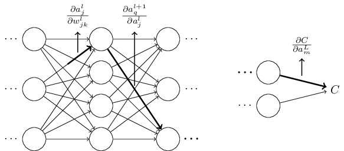
До сих пор я приводил эвристическое рассуждение — способ думать о том, что происходит, когда мы возмущаем вес сети. Набросаю, как можно развить это рассуждение дальше. Во-первых, можно вывести явные выражения для всех отдельных частных производных в уравнении (53). Это легко сделать с помощью небольшого анализа. Затем можно попытаться понять, как записать все суммы по индексам в виде умножений матриц. Это оказывается утомительно и требует некоторого упорства, но не выдающейся проницательности. Проделав всё это и максимально упростив результат, вы обнаружите, что получили в точности алгоритм обратного распространения! Так что алгоритм обратного распространения можно рассматривать как способ вычислить сумму коэффициентов по всем этим путям. Или, говоря чуть иначе, алгоритм обратного распространения — это хитрый способ отслеживать малые возмущения весов (и смещений) по мере того, как они распространяются по сети, доходят до выхода и влияют на стоимость.
Проделывать всё это здесь я не буду. Это запутанно и требует значительной аккуратности во всех деталях. Если вы любите трудные задачи, вам может понравиться попробовать. А если нет — надеюсь, этот ход мысли всё равно даёт некоторое понимание того, чего достигает обратное распространение.
А как насчёт второй загадки — как вообще можно было открыть обратное распространение? На самом деле, если следовать подходу, который я только что набросал, вы придёте к доказательству обратного распространения. К сожалению, это доказательство заметно длиннее и сложнее того, что я описал ранее в этой главе. Как же было найдено то короткое (но более загадочное) доказательство? Если расписать все детали длинного доказательства, то задним числом в глаза бросаются несколько очевидных упрощений. Вы делаете эти упрощения, получаете более короткое доказательство и записываете его. И тут бросаются в глаза ещё несколько очевидных упрощений. Вы повторяете всё снова. После нескольких итераций получается доказательство, которое мы видели раньше6, — короткое, но несколько туманное, потому что все указатели на то, как оно было построено, убраны! Конечно, я прошу вас поверить мне на слово, но в происхождении того доказательства действительно нет никакой великой тайны. Это просто большая и упорная работа по упрощению доказательства, набросанного в этом разделе.